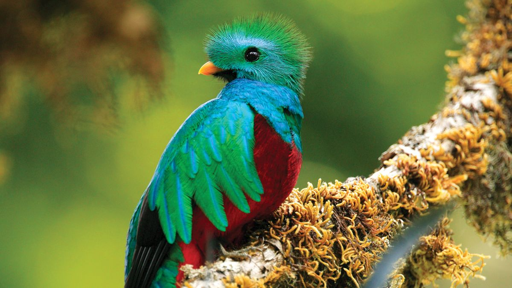

Aves
Costa Rica tiene una gran variedad de aves, se considera un paraíso para los observadores de estas. Se pueden encontrar y ver en la mayoría de parques nacionales que posee el país y es que una persona puede observar aproximadamente 100 especies de aves en un día. Gracias a la protección que ofrece Costa Rica con la tierra ha permitido que estas distintas especies sobrevivan y progresen. Algunas de las especies más comunes son: Quetzal: Es considerada como una de las aves más bellas del mundo. Son aves de colores vibrantes que viven en zonas montañosas. Tucán pico iris: Es uno de los pájaros más frecuentes que puedes encontrarte fácilmente en Costa Rica. El enorme pico del tucán marcado por colores amarillentos y anaranjados lo hacen precioso y diferente. Lapa roja: Es un tipo de ave de tamaño mediano, que se encuentra en el lado del Pacífico. Destaca por sus alas cortas, su cuerpo grande y por sus plumas rojas que suelen cubrir su espalda. Saltarín colilargo: Es una pequeña ave que se caracteriza por saltar de rama en rama, de allí su nombre. Llama la atención por su colorido plumaje. Cabezón cabeza roja: Se caracteriza por tener la cabeza, la garganta y el pecho de color rojo intenso. Principalmente, vive en bosques húmedos aunque también puede estar en matorrales. Puede permanecer tanto en solitario como en pareja. Momoto cejiceleste: Es una de las aves con el físico más llamativo de Costa Rica ya que aunque es pequeña su cuerpo se caracteriza por distintos colores y estampados suelen estar junto a un camino o quebrada. Colibrí morado: Este tipo de colibrí tiene un aspecto muy singular ya que tiene la cabeza o todo el cuerpo violeta. Se suelen ubicar en las zonas húmedas del bosque.
Mamíferos

La biodiversidad que caracteriza Costa Rica permite la existencia de las diferentes especies de mamíferos terrestres y marinos en el país. Existen alrededor de 250 especies de mamíferos los cuales 28 son especies acuáticas. Son los seres vivos que han tenido más evolución, tienen un sistema nervioso muy desarrollado, su cuerpo está cubierto de pelo y según su alimentación pueden ser carnívoros, omnívoros, herbívoros o insectívoros. Costa rica tiene una extensa riqueza marina con arrecifes coralinos en sus dos costas, por ello el país cuenta con especies marinas fascinantes. Su extenso litoral que se divide entre el Pacífico y la costa caribeña le permitirán ver un maravilloso mundo debajo del agua ya que el país cuenta con una gran variedad de diferentes peces. Las especies más comunes que te podrás encontrar allí son: Monos congos: Este tipo de monos son muy conocidos por los aullidos que hacen ya que se pueden escuchar a más de un kilómetro de distancia. Suelen ser de pelaje negro y amarillento y normalmente van en grupo. Monos carablancas: Los puedes encontrar en los bosques húmedos de Costa Rica, su cuerpo y pelaje son de color negro mientras que su cara es totalmente blanca. Suelen estar en los árboles y prácticamente nunca van solos. Jaguar: Es uno de los animales que se encuentran en peligro de extinción así como uno de los felinos más grande de América, son animales que pesan entre 30 y 100 kilos. Suelen ser nocturnos y estar en zonas húmedas. Mapaches: Los puedes ver en los bosques cerca de los ríos aunque también pueden vivir en zonas habitadas, por ello es un animal fácil de ver. Es pequeño y de color gris y tiene las mejillas, los ojos y la punta de la nariz de olor negro. Delfines y ballenas: Gracias al clima tropical y a las aguas cálidas que tiene Costa Rica, estos mamíferos marinos los podrás ver a lo largo de toda la costa del país especialmente en el Golfo dulce.
Reptiles

Este país también es famoso por tener muchos tipos de reptiles interesantes y fascinantes. Suelen vivir en sitios como las rocas, los troncos o los escombros. Tienden a tener las patas cortas o estas son inexistentes, por ello se suelen desplazar arrastrándose. Algunas especies que tienen más presencia son: Serpientes: Son de los reptiles que más te puedes encontrar en el país ya que son más de 130 especies las que se encuentran allí. Se les denomina animales de “sangre fría” porque no pueden regular su temperatura corporal. Algunas de las más comunes en el país son: Terciopelo, Bejuquilla verde, Toboba Gata, Boa Contrictor o la serpiente de leche negra. Tortugas: El Parque Nacional de Tortuguero es una de las zonas más importantes de la mitad occidental del Caribe para observar la tortuga verde así como las especies de tortugas marinas ya que se pueden ver 5 de las 7 especies de tortugas marinas que habitan en el mundo. Algunas de las más importantes son: la tortuga verde, la tortuga Caery, la tortuga Lora o la tortuga Baula. Cocodrilos: es otra de las especies que se ve amenazada por la extinción a causa de la caza indiscriminada para la extracción de sus pieles. Los puedes encontrar cerca de algunos os como el Tempisque o el río Tárcoles.
Insectos

Los insectos también son conocidos en este país ya que se cifran más de 35.000 especies, aunque muchas de estas son desconocidas para la ciencia. Normalmente son pequeños aunque algunas especies pueden llegar a ser bastante más grandes que en otros países. La mayoría de los insectos suelen salir por la noche. Algunos de los más comunes son: Escorpiones: Es una especie muy común en Costa Rica, sobretodo en el Valle central. Se alimentan a través de otros invertebrados y habitan en ambientes como las selvas tropicales. Cuando más grandes son menos veneno tienen, aun así hay que tener cuidado ya que pueden ser peligrosos. Escarabajos: Es una de los insectos más grandes del país, especialmente el escarabajo Hércules, y también son los que tienen más presencia. Su cuerpo suele ser alargado aunque a veces es alargado. El escarabajo dorado de Costa Rica es famoso en todo el mundo gracias a la belleza y el color que tiene. Mariposas: Son los insectos más bonitos que te puedes encontrar en Costa Rica. Destacan por ser muy diferentes ya que los puedes ver de todos los colores y tamaños posibles. El más grande es la mariposa Morpho ya que puede crecer hasta llegar a los quince centímetros de altura, esta, suele estar en lo hondo de la selva.